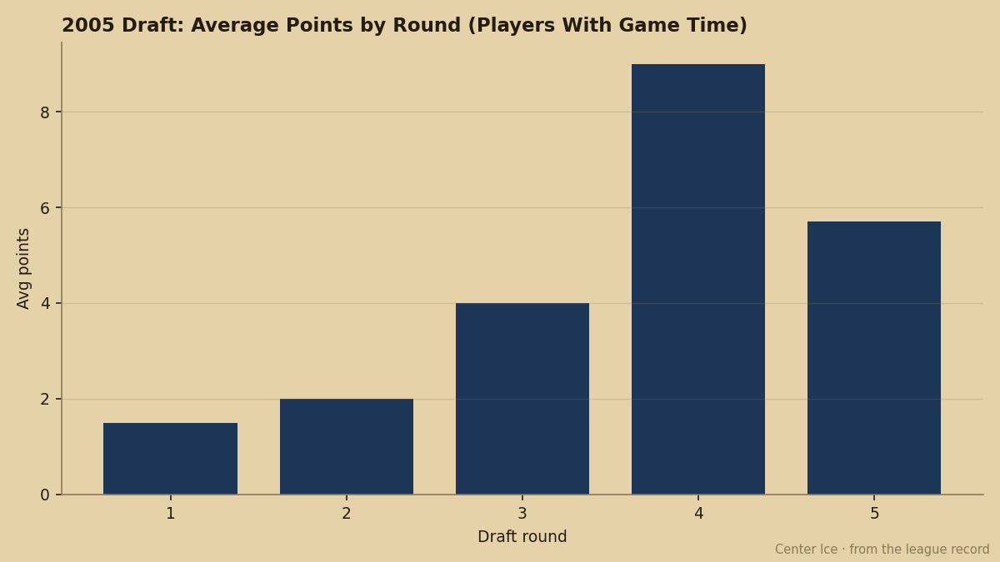
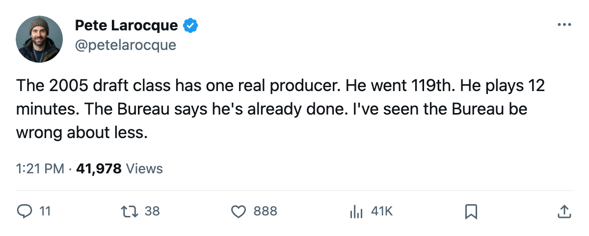
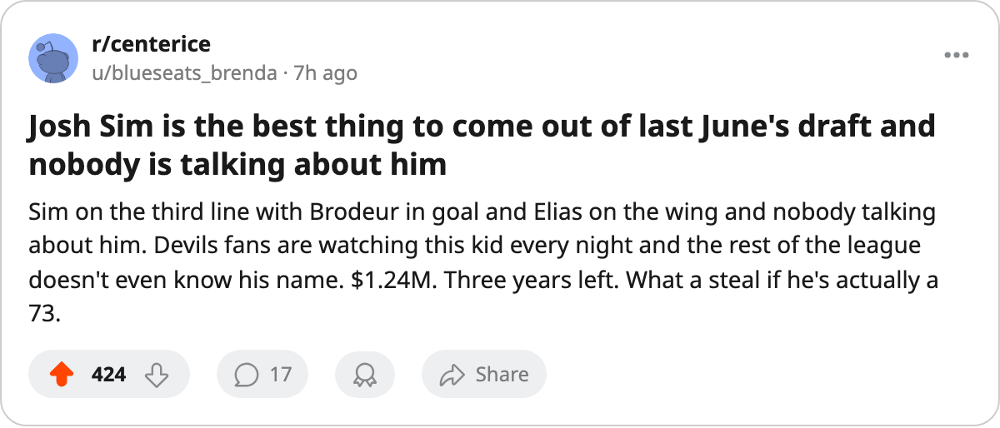

The Best Player From the 2005 Draft Plays 12.8 Minutes a Night at New Jersey
Josh Sim leads the entire class with 14 points. The Bureau thinks he is already done growing.
 Pete LarocqueScouting editor · The Prospect File
Pete LarocqueScouting editor · The Prospect FileJosh Sim73 has 14 points in 24 games. He plays 12.8 minutes a night at centre for  New Jersey Devils, he was the 119th pick last June, and he is the highest-scoring player from the 2005 draft class.
New Jersey Devils, he was the 119th pick last June, and he is the highest-scoring player from the 2005 draft class.
That sentence should not be true. The Devils held no first-round pick in 2005, and their best selection who found a roster spot went 119th overall, 13 rounds down the board from where the class opened. Sim's 14 points are more than any first-round pick in this draft has produced. Tim Gardener75 at  Toronto Maple Leafs has 0 points in 19 games. Boris Bunka64 at
Toronto Maple Leafs has 0 points in 19 games. Boris Bunka64 at  Detroit Red Wings has 3 in 22. The first round, where it has played, averages 1.5 points per man.
Detroit Red Wings has 3 in 22. The first round, where it has played, averages 1.5 points per man.

The Bureau's word: this is the peak
Sim's overall sits at 73. His potential grade is 73. The Book is telling New Jersey Devils that their best 2005 selection has already reached his career high and will not exceed it. He is 20 years old. His birth date is October 8, 1985, which makes him one of the younger men in this class by a full year from the January-born players who got the early picks.
His attribute grades explain the production and the ceiling. His checking is 79, his endurance 78, his puck handling 77. His speed is not on the top six list. His fight grade is 52, his faceoffs 52. This is a grinding middle-six centre who wins the puck, keeps it, and gives it to someone better. The 14 points came alongside  Patrik Elias86 and
Patrik Elias86 and  Scott Gomez82 on the same roster, and 7 of them are goals, which means he is finding open ice and finishing rather than setting up.
Scott Gomez82 on the same roster, and 7 of them are goals, which means he is finding open ice and finishing rather than setting up.
What it costs and what it buys
Sim carries a $1.24M entry-level contract with 3 years remaining. He is a rookie deal that the Development Index has not moved at all: his form sits at 0, meaning his overall reads exactly where the Book's base puts it. No riser flag, no faller flag. The Bureau sees a steady player at his current level.
The class's second-best producer, Mika Tirkkonen75 at  New York Islanders, has 8 points in 7 games at 134th overall. Fredrik Sillanpaa77 at
New York Islanders, has 8 points in 7 games at 134th overall. Fredrik Sillanpaa77 at  Calgary Flames has 7 in 21 from pick 122. The back end of the 2005 draft is producing at a rate the front end has not matched, and New Jersey Devils holds the single best piece.
Calgary Flames has 7 in 21 from pick 122. The back end of the 2005 draft is producing at a rate the front end has not matched, and New Jersey Devils holds the single best piece.
The New Jersey problem
New Jersey's 2005 draft produced two players with game time: Sim and Petri Makiaho64, a third-round pick whose potential the Bureau rates at 99 but who has not played a single game this season. The Devils' young core is Brodeur [114] and Elias and Langenbrunner [547], men in their late 20s and early 30s. Sim is the first thread of the next one, and the Bureau grades that thread as already finished.
The Index has Sim at 0, potential at 73, overall at 73. He is outscoring the 2005 first round 14 points to 3 combined among those who have played, and the Book's answer is that this is what he is.
I do not trust a potential grade equal to the current overall. I have said it before about other men and other clubs. The Bureau put 98 on Tim Gardener's potential and 51 on Karel Duba81's, and both of those calls were made before anyone laced up skates this season. Sim's grades came after 24 games and 14 points, and the number still did not move. That is either discipline or an error, and the next 57 games will tell which.

